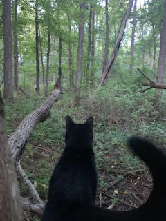
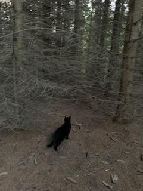
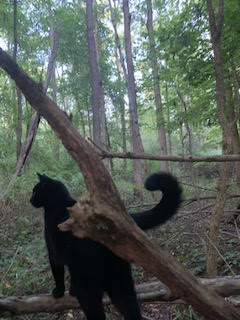

Tubby's original name was not Tubby! She began her life as Tango, along with her sister Cash. Two kittens meant two bowls when it came to feeding time and Tubby would always pounce for it, determined to get to the food first. When her sister would try and get to her own food, Tubby would notice and also pounce to push her out of the way. This provoked her dad to say, "Hey, Tubby, get out of the way and let your sister eat!" After that, the name just stuck. Her sister, was also renamed Babou, because she came with a wild streak! The name is very fitting, considering she chose to take off into the forest a couple of years ago and become fully wild. She hangs out with the neighbour occasionally, and can be spotted around the forest in the valley. We think she was sick of Tubby hogging all of the food. We miss her.
Tubby is a friendly feline who loves backrubs & scritches. She is used to being the lone wolf on the animal side at home so she gets lots of love and attention. She will often mew, chirp, and meow when she would like your attention on her, usually because she is calling you to perform a task for her. She has many different noises and sounds that mean different things, sometimes it feels as though she is actually carrying out a conversation.
Tubby likes to spend her afternoons having cat naps so that she can enjoy her evenings and nights outdoors. She loves frolicking outside and preying on small creatures, especially mice. If you are heading out, she will often follow and keep you company. Whether you are just hanging out or doing some work, she will be there to oversee the action. Tubby loves to explore and if she spots a new plant or flower she will go to smell it, and if she likes it, will rub her face into it. She also goes on car rides with her humans to explore new places and occassionally visit other family members' households.
  